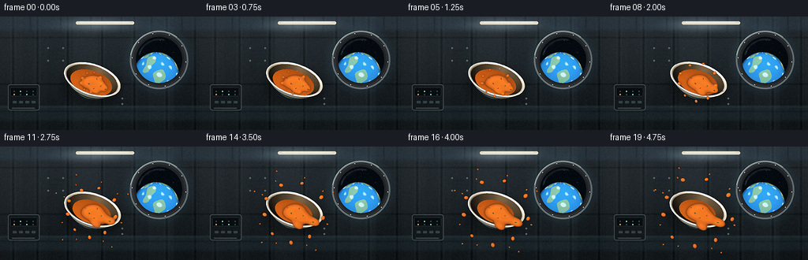
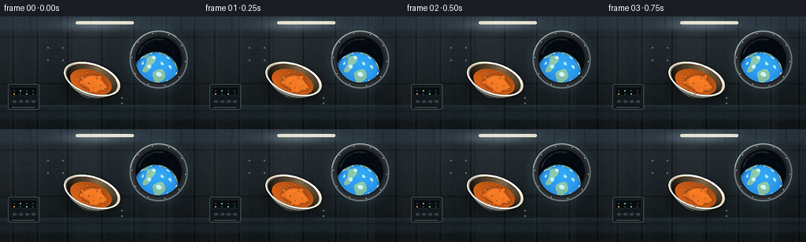
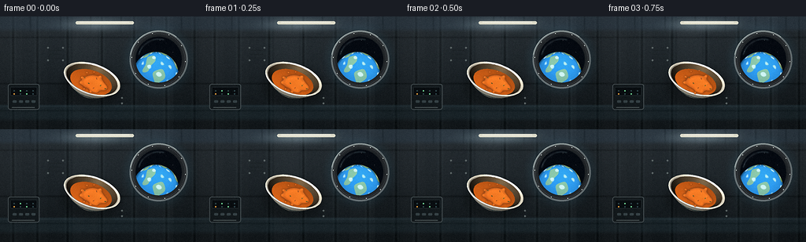
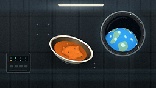
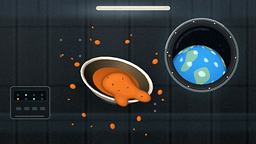
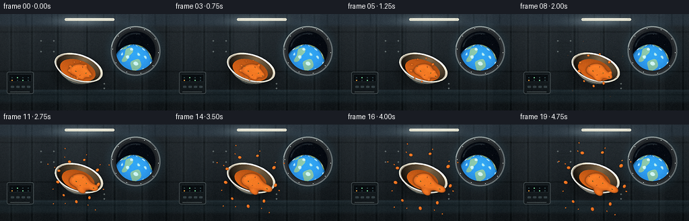

CODING AGENTS AS PIXEL WORLD MODELS
traex/DeepSeek-V4.1-Flash · mechanics_0000
点击播放 · 原生 RGB 像素
逐轮保存的候选
回放视频、检查图与代码变化。
每份候选均可单独播放。实际图片检查记录在下方工具轨迹中。
候选 01播放与检查图
点击播放 · 原生 RGB 像素


展开代码变化
--- 上一保存版本
+++ 本次保存版本
@@ -0,0 +1,831 @@
+"""Procedural zero-gravity soup scene for PixelWorld."""
+
+from __future__ import annotations
+
+import math
+from pathlib import Path
+
+import numpy as np
+from PIL import Image, ImageDraw, ImageFilter
+
+import artifact_io
+
+
+WIDTH = 256
+HEIGHT = 144
+FRAMES = 20
+FPS = 4.0
+SS = 4
+RW = WIDTH * SS
+RH = HEIGHT * SS
+
+
+def smoothstep(edge0: float, edge1: float, value):
+ t = np.clip((value - edge0) / (edge1 - edge0), 0.0, 1.0)
+ return t * t * (3.0 - 2.0 * t)
+
+
+def mix(a, b, t):
+ return a * (1.0 - t) + b * t
+
+
+def normalize(vector):
+ length = np.linalg.norm(vector, axis=-1, keepdims=True)
+ return vector / np.maximum(length, 1e-8)
+
+
+def rotation_x(angle):
+ c, s = math.cos(angle), math.sin(angle)
+ return np.array(((1, 0, 0), (0, c, -s), (0, s, c)), dtype=np.float64)
+
+
+def rotation_y(angle):
+ c, s = math.cos(angle), math.sin(angle)
+ return np.array(((c, 0, s), (0, 1, 0), (-s, 0, c)), dtype=np.float64)
+
+
+def rotation_z(angle):
+ c, s = math.cos(angle), math.sin(angle)
+ return np.array(((c, -s, 0), (s, c, 0), (0, 0, 1)), dtype=np.float64)
+
+
+def station_background(time_value: float):
+ y, x = np.mgrid[0:RH, 0:RW].astype(np.float32)
+ xn = x / RW
+ yn = y / RH
+
+ top = np.array((43.0, 52.0, 58.0))
+ bottom = np.array((20.0, 27.0, 31.0))
+ vertical = np.clip(yn * 1.18, 0.0, 1.0)[..., None]
+ color = top * (1.0 - vertical) + bottom * vertical
+
+ panel_index = np.floor((xn + 0.015) * 8.0)
+ panel_variation = (np.sin(panel_index * 2.31 + 0.8) * 3.0)[..., None]
+ color += panel_variation
+
+ seam_positions = (0.065, 0.185, 0.335, 0.505, 0.665, 0.825, 0.965)
+ for seam in seam_positions:
+ distance = np.abs(x - seam * RW)
+ dark = np.exp(-(distance / (1.5 * SS)) ** 2)
+ light = np.exp(-((distance - 2.5 * SS) / (1.2 * SS)) ** 2)
+ color -= dark[..., None] * np.array((10.0, 11.0, 12.0))
+ color += light[..., None] * np.array((5.0, 6.0, 6.0))
+
+ for seam in (0.185, 0.595, 0.835):
+ distance = np.abs(y - seam * RH)
+ line = np.exp(-(distance / (1.1 * SS)) ** 2)
+ color -= line[..., None] * np.array((9.0, 10.0, 11.0))
+
+ # Ceiling ribs and the broad, cool interior light.
+ ceiling = smoothstep(0.145, 0.095, yn)
+ color = color * (1.0 - ceiling[..., None] * 0.33) + ceiling[..., None] * np.array((19.0, 27.0, 34.0))
+ for seam in (0.15, 0.30, 0.45, 0.60, 0.75, 0.90):
+ distance = np.abs(x - seam * RW)
+ rib = np.exp(-(distance / (1.0 * SS)) ** 2) * smoothstep(0.17, 0.05, yn)
+ color -= rib[..., None] * np.array((11.0, 12.0, 13.0))
+
+ light_center = (0.47 + 0.006 * math.sin(time_value * 2.0 * math.pi), 0.072)
+ dx = (xn - light_center[0]) / 0.24
+ dy = (yn - light_center[1]) / 0.075
+ lamp_glow = np.exp(-(dx * dx + dy * dy) * 2.2)
+ color += lamp_glow[..., None] * np.array((46.0, 51.0, 50.0))
+
+ # Dark equipment rail across the lower wall.
+ rail = smoothstep(0.775, 0.79, yn) * smoothstep(0.94, 0.89, yn)
+ color = color * (1.0 - rail[..., None] * 0.30) + rail[..., None] * np.array((13.0, 20.0, 23.0))
+ rail_highlight = np.exp(-((y - 0.795 * RH) / (1.2 * SS)) ** 2)
+ color += rail_highlight[..., None] * np.array((7.0, 9.0, 10.0))
+
+ rng = np.random.default_rng(194)
+ coarse = rng.normal(0.0, 1.0, (HEIGHT, WIDTH)).astype(np.float32)
+ coarse_image = Image.fromarray(np.uint8(np.clip(coarse * 22.0 + 128.0, 0, 255)))
+ coarse = np.asarray(
+ coarse_image.resize((RW, RH), Image.Resampling.BILINEAR), dtype=np.float32
+ )
+ color += (coarse - 128.0)[..., None] * 0.055
+
+ return Image.fromarray(np.uint8(np.clip(color, 0, 255)), "RGB").convert("RGBA")
+
+
+def add_window(base: Image.Image):
+ draw = ImageDraw.Draw(base, "RGBA")
+ cx, cy = 201.5, 55.0
+ outer_r = 37.0
+
+ glow = Image.new("RGBA", base.size, (0, 0, 0, 0))
+ gd = ImageDraw.Draw(glow, "RGBA")
+ gd.ellipse(
+ (
+ (cx - outer_r - 9.0) * SS,
+ (cy - outer_r - 9.0) * SS,
+ (cx + outer_r + 9.0) * SS,
+ (cy + outer_r + 9.0) * SS,
+ ),
+ fill=(74, 150, 183, 26),
+ )
+ glow = glow.filter(ImageFilter.GaussianBlur(6.0 * SS))
+ base.alpha_composite(glow)
+
+ draw.ellipse(
+ (
+ (cx - outer_r) * SS,
+ (cy - outer_r) * SS,
+ (cx + outer_r) * SS,
+ (cy + outer_r) * SS,
+ ),
+ fill=(27, 33, 38, 255),
+ outline=(104, 116, 120, 255),
+ width=2 * SS,
+ )
+ for radius, shade in ((35.0, 72), (33.5, 89), (32.0, 56), (30.5, 42)):
+ draw.ellipse(
+ (
+ (cx - radius) * SS,
+ (cy - radius) * SS,
+ (cx + radius) * SS,
+ (cy + radius) * SS,
+ ),
+ outline=(shade, shade + 5, shade + 7, 255),
+ width=max(1, SS // 2),
+ )
+
+ # Window contents: stars, a blue Earth limb, and soft cloud bands.
+ window_r = 29.3
+ x0 = int((cx - window_r) * SS)
+ x1 = int((cx + window_r) * SS) + 1
+ y0 = int((cy - window_r) * SS)
+ y1 = int((cy + window_r) * SS) + 1
+ yy, xx = np.mgrid[y0:y1, x0:x1].astype(np.float32)
+ px = xx / SS
+ py = yy / SS
+ rr = np.sqrt((px - cx) ** 2 + (py - cy) ** 2)
+ inside = rr <= window_r
+
+ content = np.zeros((y1 - y0, x1 - x0, 4), dtype=np.float32)
+ content[..., 0] = 4.0
+ content[..., 1] = 10.0
+ content[..., 2] = 18.0
+ content[..., 3] = inside * 255.0
+
+ earth_cx, earth_cy, earth_r = 197.8, 74.0, 29.0
+ ex = (px - earth_cx) / earth_r
+ ey = (py - earth_cy) / earth_r
+ earth_q = ex * ex + ey * ey
+ earth_mask = (earth_q <= 1.0) & inside
+ ez = np.sqrt(np.clip(1.0 - earth_q, 0.0, 1.0))
+ longitude = np.arctan2(ex, np.maximum(ez, 0.08))
+ latitude = np.arcsin(np.clip(-ey, -1.0, 1.0))
+
+ light_dot = np.clip(0.22 * ex - 0.55 * ey + 0.80 * ez, 0.0, 1.0)
+ ocean = np.stack(
+ (
+ 10.0 + 22.0 * light_dot,
+ 54.0 + 66.0 * light_dot,
+ 90.0 + 91.0 * light_dot,
+ ),
+ axis=-1,
+ )
+ land_field = (
+ np.sin(longitude * 3.4 + latitude * 2.2 + 1.3)
+ + 0.72 * np.sin(longitude * 7.1 - latitude * 4.4 + 0.2)
+ + 0.42 * np.cos(latitude * 9.0 + longitude * 2.1)
+ )
+ land = land_field > 0.62
+ land_color = np.stack(
+ (
+ 82.0 + 48.0 * light_dot,
+ 104.0 + 55.0 * light_dot,
+ 57.0 + 38.0 * light_dot,
+ ),
+ axis=-1,
+ )
+ earth_color = np.where(land[..., None], land_color, ocean)
+
+ clouds = (
+ np.sin(longitude * 6.2 + latitude * 9.4 + 0.6)
+ + 0.7 * np.sin(longitude * 12.0 - latitude * 3.8)
+ + 0.45 * np.cos(latitude * 15.0)
+ )
+ cloud_alpha = np.clip((clouds - 1.05) * 1.65, 0.0, 0.72)
+ cloud_alpha *= np.clip(light_dot * 1.5 + 0.28, 0.0, 1.0)
+ earth_color = earth_color * (1.0 - cloud_alpha[..., None]) + cloud_alpha[..., None] * 222.0
+
+ limb = np.clip((1.0 - np.sqrt(np.clip(earth_q, 0.0, 1.0))) / 0.10, 0.0, 1.0)
+ earth_color += limb[..., None] * np.array((26.0, 74.0, 118.0)) * 0.75
+ content[..., :3] = np.where(earth_mask[..., None], earth_color, content[..., :3])
+
+ # Sparse stars are deterministic and sit behind the Earth.
+ star_rng = np.random.default_rng(712)
+ for _ in range(34):
+ angle = star_rng.uniform(0.0, 2.0 * math.pi)
+ radius = math.sqrt(star_rng.uniform(0.0, 1.0)) * (window_r - 2.5)
+ sx = int((cx + math.cos(angle) * radius) * SS)
+ sy = int((cy + math.sin(angle) * radius) * SS)
+ if earth_mask[max(0, min(earth_mask.shape[0] - 1, sy - y0)), max(0, min(earth_mask.shape[1] - 1, sx - x0))]:
+ continue
+ size = star_rng.integers(1, 3)
+ brightness = star_rng.integers(125, 235)
+ content[
+ max(0, sy - y0) : min(content.shape[0], sy - y0 + size),
+ max(0, sx - x0) : min(content.shape[1], sx - x0 + size),
+ :3,
+ ] = brightness
+
+ window_pixels = Image.fromarray(np.uint8(np.clip(content, 0, 255)), "RGBA")
+ base.alpha_composite(window_pixels, (x0, y0))
+
+ # Glass sheen and a cool lower crescent.
+ sheen = Image.new("RGBA", base.size, (0, 0, 0, 0))
+ sd = ImageDraw.Draw(sheen, "RGBA")
+ sd.arc(
+ (
+ (cx - 27.0) * SS,
+ (cy - 27.0) * SS,
+ (cx + 27.0) * SS,
+ (cy + 27.0) * SS,
+ ),
+ 193,
+ 286,
+ fill=(184, 225, 238, 54),
+ width=2 * SS,
+ )
+ sd.line(
+ ((cx - 22.0) * SS, (cy - 16.0) * SS, (cx - 8.0) * SS, (cy - 25.0) * SS),
+ fill=(225, 245, 249, 24),
+ width=2 * SS,
+ )
+ sheen = sheen.filter(ImageFilter.GaussianBlur(0.65 * SS))
+ base.alpha_composite(sheen)
+
+ for index in range(10):
+ angle = index / 10.0 * 2.0 * math.pi + 0.08
+ bx = cx + math.cos(angle) * 34.2
+ by = cy + math.sin(angle) * 34.2
+ draw.ellipse(
+ ((bx - 1.25) * SS, (by - 1.25) * SS, (bx + 1.25) * SS, (by + 1.25) * SS),
+ fill=(135, 145, 146, 255),
+ outline=(39, 44, 47, 255),
+ width=max(1, SS // 2),
+ )
+ draw.ellipse(
+ ((bx - 0.45) * SS, (by - 0.55) * SS, (bx + 0.45) * SS, (by + 0.35) * SS),
+ fill=(193, 202, 199, 170),
+ )
+
+ draw.arc(
+ (
+ (cx - outer_r) * SS,
+ (cy - outer_r) * SS,
+ (cx + outer_r) * SS,
+ (cy + outer_r) * SS,
+ ),
+ 190,
+ 308,
+ fill=(174, 186, 184, 190),
+ width=SS,
+ )
+
+
+def add_station_details(base: Image.Image):
+ draw = ImageDraw.Draw(base, "RGBA")
+
+ # Overhead service light.
+ light_glow = Image.new("RGBA", base.size, (0, 0, 0, 0))
+ gd = ImageDraw.Draw(light_glow, "RGBA")
+ gd.rounded_rectangle(
+ (92 * SS, 4 * SS, 174 * SS, 12 * SS),
+ radius=4 * SS,
+ fill=(238, 235, 212, 22),
+ )
+ light_glow = light_glow.filter(ImageFilter.GaussianBlur(4.5 * SS))
+ base.alpha_composite(light_glow)
+ draw.rounded_rectangle(
+ (96 * SS, 6 * SS, 170 * SS, 10 * SS),
+ radius=2 * SS,
+ fill=(238, 238, 220, 235),
+ )
+ draw.line(
+ (101 * SS, 7 * SS, 164 * SS, 7 * SS),
+ fill=(255, 255, 245, 255),
+ width=SS,
+ )
+
+ # Left-side equipment panel with restrained indicator lights.
+ draw.rounded_rectangle(
+ (10 * SS, 86 * SS, 50 * SS, 119 * SS),
+ radius=3 * SS,
+ fill=(19, 27, 31, 225),
+ outline=(72, 83, 87, 220),
+ width=SS,
+ )
+ draw.rounded_rectangle(
+ (13 * SS, 90 * SS, 47 * SS, 101 * SS),
+ radius=1.5 * SS,
+ fill=(8, 14, 18, 245),
+ outline=(48, 59, 64, 220),
+ width=max(1, SS // 2),
+ )
+ for row in range(2):
+ for col in range(4):
+ lx = (17 + col * 8) * SS
+ ly = (94 + row * 4) * SS
+ if (row, col) in ((0, 1), (1, 2)):
+ light = (117, 221, 156, 255)
+ elif (row, col) == (1, 0):
+ light = (240, 170, 67, 255)
+ else:
+ light = (48, 75, 81, 255)
+ draw.ellipse((lx, ly, lx + 1.8 * SS, ly + 1.8 * SS), fill=light)
+ for index in range(4):
+ draw.rounded_rectangle(
+ ((16 + index * 8) * SS, 107 * SS, (21 + index * 8) * SS, 110 * SS),
+ radius=SS,
+ fill=(56, 70, 75, 230),
+ )
+ draw.line((15 * SS, 116 * SS, 44 * SS, 116 * SS), fill=(84, 96, 98, 160), width=SS)
+
+ # Small wall vents and rivets keep the module from reading as a flat backdrop.
+ for vent_y in (43, 48, 53):
+ draw.line((62 * SS, vent_y * SS, 78 * SS, vent_y * SS), fill=(28, 36, 40, 190), width=SS)
+ for x, y in ((61, 40), (80, 40), (61, 56), (80, 56), (155, 104), (155, 111)):
+ draw.ellipse(
+ ((x - 1.2) * SS, (y - 1.2) * SS, (x + 1.2) * SS, (y + 1.2) * SS),
+ fill=(93, 104, 105, 190),
+ )
+
+
+def project_points(points: np.ndarray, center, roll: float, pitch: float, yaw: float):
+ transform = (
+ rotation_z(roll)
+ @ rotation_y(yaw)
+ @ rotation_x(pitch)
+ )
+ rotated = points @ transform.T
+
+ camera = np.array((0.0, 1.55, 3.25), dtype=np.float64)
+ camera_distance = np.linalg.norm(camera)
+ forward = -camera / camera_distance
+ up = np.array((0.0, 1.0, 0.0), dtype=np.float64)
+ right = normalize(np.cross(forward, up))
+ view_up = np.cross(right, forward)
+
+ camera_x = rotated @ right
+ camera_y = rotated @ view_up
+ depth = rotated @ forward + camera_distance
+ perspective = camera_distance / np.maximum(depth, 0.35)
+
+ screen_x = center[0] * SS + camera_x * 34.5 * SS * perspective
+ screen_y = center[1] * SS - camera_y * 34.5 * SS * perspective
+ return np.stack((screen_x, screen_y), axis=-1), depth, rotated
+
+
+def quad_grid(rings: np.ndarray, segments: int = 64):
+ quads = []
+ for ring_index in range(rings.shape[0] - 1):
+ for segment in range(segments):
+ next_segment = (segment + 1) % segments
+ quads.append(
+ (
+ rings[ring_index, segment],
+ rings[ring_index, next_segment],
+ rings[ring_index + 1, next_segment],
+ rings[ring_index + 1, segment],
+ )
+ )
+ return np.asarray(quads, dtype=np.float64)
+
+
+def make_bowl_faces(time_value: float):
+ segments = 64
+ angles = np.linspace(0.0, 2.0 * math.pi, segments, endpoint=False)
+
+ outer_rings = []
+ for u in np.linspace(0.0, 1.0, 13):
+ radius = 0.13 + 0.87 * (u ** 0.72)
+ height = -0.54 + 0.82 * (u ** 1.22)
+ outer_rings.append(
+ np.stack(
+ (
+ radius * np.cos(angles),
+ np.full(segments, height),
+ radius * np.sin(angles),
+ ),
+ axis=-1,
+ )
+ )
+ outer_faces = quad_grid(np.asarray(outer_rings), segments)
+
+ inner_rings = []
+ for u in np.linspace(0.0, 1.0, 10):
+ radius = 0.06 + 0.86 * (u ** 0.68)
+ height = -0.43 + 0.67 * (u ** 1.18)
+ inner_rings.append(
+ np.stack(
+ (
+ radius * np.cos(angles),
+ np.full(segments, height),
+ radius * np.sin(angles),
+ ),
+ axis=-1,
+ )
+ )
+ inner_faces = quad_grid(np.asarray(inner_rings), segments)
+
+ rim_radii = (1.0, 0.975, 0.94, 0.92)
+ rim_heights = (0.28, 0.292, 0.275, 0.24)
+ rim_rings = [
+ np.stack(
+ (
+ radius * np.cos(angles),
+ np.full(segments, height),
+ radius * np.sin(angles),
+ ),
+ axis=-1,
+ )
+ for radius, height in zip(rim_radii, rim_heights)
+ ]
+ rim_faces = quad_grid(np.asarray(rim_rings), segments)
+
+ # A shallow, glossy pool sits inside the bowl and is depth-sorted with the rim.
+ spill = smoothstep(0.0, 1.0, time_value)
+ pool_radius = 0.77 - 0.10 * spill
+ pool_rings = []
+ for radius_fraction in (0.0, 0.22, 0.46, 0.70, 1.0):
+ radius = pool_radius * radius_fraction
+ height = 0.075 + 0.065 * (1.0 - radius_fraction * radius_fraction)
+ pool_rings.append(
+ np.stack(
+ (
+ np.maximum(radius, 0.004) * np.cos(angles),
+ np.full(segments, height),
+ np.maximum(radius, 0.004) * np.sin(angles),
+ ),
+ axis=-1,
+ )
+ )
+ pool_faces = quad_grid(np.asarray(pool_rings), segments)
+
+ return outer_faces, inner_faces, rim_faces, pool_faces
+
+
+def shade_faces(
+ faces: np.ndarray,
+ center,
+ roll: float,
+ pitch: float,
+ yaw: float,
+ base_color,
+ light_color,
+ ambient: float,
+ specular_power: float,
+ specular_strength: float,
+):
+ points, depth, _ = project_points(faces, center, roll, pitch, yaw)
+ normals = np.cross(faces[:, 1] - faces[:, 0], faces[:, 2] - faces[:, 0])
+ normals = normalize(normals)
+ centroids = faces.mean(axis=1)
+
+ transform = rotation_z(roll) @ rotation_y(yaw) @ rotation_x(pitch)
+ rotated_centroids = centroids @ transform.T
+ camera = np.array((0.0, 1.55, 3.25), dtype=np.float64)
+ view_direction = normalize(camera - rotated_centroids)
+ facing = np.sign(np.sum(normals * view_direction, axis=1, keepdims=True))
+ facing[facing == 0.0] = 1.0
+ normals *= facing
+
+ light_direction = normalize(np.array((-0.42, 0.72, 0.78)))
+ diffuse = np.clip(normals @ light_direction, 0.0, 1.0)
+ half_vector = normalize(light_direction + view_direction)
+ specular = np.clip(np.sum(normals * half_vector, axis=1), 0.0, 1.0) ** specular_power
+
+ base = np.asarray(base_color, dtype=np.float64)
+ lit = base[None, :] * (ambient + 0.86 * diffuse[:, None])
+ lit += np.asarray(light_color, dtype=np.float64)[None, :] * (specular[:, None] * specular_strength)
+ colors = np.uint8(np.clip(lit, 0, 255))
+ return points, depth, colors
+
+
+def add_bowl_shadow(base: Image.Image, center):
+ shadow = Image.new("RGBA", base.size, (0, 0, 0, 0))
+ draw = ImageDraw.Draw(shadow, "RGBA")
+ draw.ellipse(
+ (
+ (center[0] - 37.0) * SS,
+ (center[1] - 18.0) * SS,
+ (center[0] + 38.0) * SS,
+ (center[1] + 30.0) * SS,
+ ),
+ fill=(6, 10, 11, 105),
+ )
+ shadow = shadow.filter(ImageFilter.GaussianBlur(5.0 * SS))
+ base.alpha_composite(shadow)
+
+
+def draw_bowl(base: Image.Image, time_value: float):
+ center = (115.8 + 0.5 * math.sin(time_value * math.pi), 83.4 - 0.8 * time_value)
+ roll = math.radians(-15.5 + 1.8 * time_value)
+ pitch = math.radians(10.0 + 2.0 * time_value)
+ yaw = math.radians(2.5 * math.sin(time_value * math.pi * 0.75))
+ add_bowl_shadow(base, center)
+
+ outer_faces, inner_faces, rim_faces, pool_faces = make_bowl_faces(time_value)
+ entries = []
+
+ points, depth, colors = shade_faces(
+ outer_faces,
+ center,
+ roll,
+ pitch,
+ yaw,
+ base_color=(213, 207, 187),
+ light_color=(255, 251, 226),
+ ambient=0.39,
+ specular_power=22.0,
+ specular_strength=0.34,
+ )
+ for face_index in range(points.shape[0]):
+ u = face_index // 64 / 12.0
+ if 0.54 < u < 0.70:
+ stripe = np.array((36, 70, 78), dtype=np.float64)
+ factor = colors[face_index].astype(np.float64) / np.maximum(
+ np.array((213, 207, 187), dtype=np.float64), 1.0
+ )
+ colors[face_index] = np.uint8(np.clip(stripe * factor, 0, 255))
+ elif u < 0.18:
+ colors[face_index] = np.uint8(np.clip(colors[face_index] * 0.90, 0, 255))
+ entries.append((depth[face_index], points[face_index], colors[face_index]))
+
+ points, depth, colors = shade_faces(
+ inner_faces,
+ center,
+ roll,
+ pitch,
+ yaw,
+ base_color=(89, 73, 52),
+ light_color=(178, 151, 109),
+ ambient=0.26,
+ specular_power=28.0,
+ specular_strength=0.20,
+ )
+ for face_index in range(points.shape[0]):
+ entries.append((depth[face_index], points[face_index], colors[face_index]))
+
+ points, depth, colors = shade_faces(
+ rim_faces,
+ center,
+ roll,
+ pitch,
+ yaw,
+ base_color=(236, 229, 208),
+ light_color=(255, 252, 231),
+ ambient=0.46,
+ specular_power=36.0,
+ specular_strength=0.62,
+ )
+ for face_index in range(points.shape[0]):
+ entries.append((depth[face_index], points[face_index], colors[face_index]))
+
+ points, depth, colors = shade_faces(
+ pool_faces,
+ center,
+ roll,
+ pitch,
+ yaw,
+ base_color=(198, 91, 23),
+ light_color=(255, 221, 136),
+ ambient=0.45,
+ specular_power=42.0,
+ specular_strength=0.72,
+ )
+ for face_index in range(points.shape[0]):
+ entries.append((depth[face_index], points[face_index], colors[face_index]))
+
+ entries.sort(key=lambda item: -float(np.mean(item[0])))
+ draw = ImageDraw.Draw(base, "RGBA")
+ for _, polygon, color in entries:
+ coords = [tuple(point) for point in polygon]
+ fill = (int(color[0]), int(color[1]), int(color[2]), 255)
+ draw.polygon(coords, fill=fill)
+ draw.line(coords + [coords[0]], fill=fill, width=1)
+
+ return center
+
+
+def soup_blobs(time_value: float, center):
+ spill = smoothstep(0.0, 1.0, time_value) ** 1.08
+ emergence = smoothstep(0.12, 0.60, time_value)
+ cx, cy = center
+ blobs = []
+
+ blobs.append((cx - 0.6, cy - 0.8, 18.5 + 2.0 * spill, 11.4 + 2.3 * spill, -0.18, 1.38))
+ blobs.append((cx + 8.5 + 3.0 * spill, cy + 4.4 + 3.0 * spill, 12.0 + 2.0 * spill, 8.0 + 2.0 * spill, 0.28, 1.02))
+ blobs.append((cx + 16.0 + 12.0 * spill, cy + 7.2 + 7.0 * spill, 7.0 + 7.0 * spill, 5.0 + 4.2 * spill, 0.38, 0.90))
+ blobs.append((cx + 3.5 + 2.0 * spill, cy + 10.0 + 9.0 * spill, 8.5 + 3.5 * spill, 5.0 + 2.6 * spill, 0.62, 0.83))
+
+ directions = (
+ (-1.00, -0.48),
+ (-1.00, 0.08),
+ (-0.70, 0.72),
+ (-0.08, 1.00),
+ (0.55, 0.88),
+ (0.98, 0.20),
+ (0.88, -0.48),
+ (0.28, -0.96),
+ (-0.42, -0.91),
+ )
+ for index, (dx, dy) in enumerate(directions):
+ length = math.hypot(dx, dy)
+ dx, dy = dx / length, dy / length
+ wobble = math.sin(index * 1.9 + time_value * math.pi * 1.25) * 1.5 * spill
+ radial = 13.0 + 31.0 * spill + wobble
+ px = cx + dx * radial - dy * wobble * 0.35
+ py = cy + dy * radial + dx * wobble * 0.35
+ size = (2.5 + 2.0 * spill) * (0.88 + 0.12 * math.sin(index * 2.4))
+ weight = 0.58 + 0.62 * emergence
+ blobs.append((px, py, size * 1.12, size * 0.91, index * 0.41, weight))
+
+ if index % 2 == 0 and time_value > 0.40:
+ far = 38.0 + 22.0 * spill
+ px2 = cx + dx * far - dy * 2.0
+ py2 = cy + dy * far + dx * 2.0
+ blobs.append(
+ (
+ px2,
+ py2,
+ (1.8 + 0.9 * spill),
+ (1.6 + 0.7 * spill),
+ -index * 0.3,
+ 0.80 * emergence,
+ )
+ )
+
+ # Thin stretched beads at the outer edge make the spreading direction legible.
+ for index, angle in enumerate((-2.64, -2.10, -1.26, -0.62, 0.35, 1.20, 2.08, 2.80)):
+ radial = 25.0 + 25.0 * spill
+ px = cx + math.cos(angle) * radial
+ py = cy + math.sin(angle) * radial
+ blobs.append(
+ (
+ px,
+ py,
+ 2.0 + 1.2 * spill,
+ 1.35 + 0.9 * spill,
+ angle,
+ 0.70 * emergence,
+ )
+ )
+ return blobs
+
+
+def add_soup(base: Image.Image, time_value: float, bowl_center):
+ blobs = soup_blobs(time_value, bowl_center)
+
+ x0 = int(38 * SS)
+ x1 = int(193 * SS)
+ y0 = int(24 * SS)
+ y1 = int(141 * SS)
+ yy, xx = np.mgrid[y0:y1, x0:x1].astype(np.float32)
+ field = np.zeros_like(xx, dtype=np.float32)
+
+ for cx, cy, rx, ry, angle, weight in blobs:
+ if weight <= 0.02:
+ continue
+ ca, sa = math.cos(angle), math.sin(angle)
+ dx = (xx / SS - cx)
+ dy = (yy / SS - cy)
+ u = (dx * ca + dy * sa) / max(rx, 0.45)
+ v = (-dx * sa + dy * ca) / max(ry, 0.45)
+ q = u * u + v * v
+ field += weight / (1.0 + 1.52 * q) ** 2
+
+ threshold = 0.50
+ alpha = smoothstep(threshold - 0.055, threshold + 0.065, field)
+ if not np.any(alpha > 0.0):
+ return
+
+ gy, gx = np.gradient(field)
+ normal_x = -gx * 0.36
+ normal_y = -gy * 0.36
+ normal_z = np.ones_like(field)
+ norm = np.sqrt(normal_x * normal_x + normal_y * normal_y + 1.0)
+ nx = normal_x / norm
+ ny = normal_y / norm
+ nz = normal_z / norm
+
+ light = np.array((-0.46, -0.52, 0.72), dtype=np.float32)
+ light = light / np.linalg.norm(light)
+ diffuse = np.clip(nx * light[0] + ny * light[1] + nz * light[2], 0.0, 1.0)
+ half = light + np.array((0.0, 0.0, 1.0), dtype=np.float32)
+ half = half / np.linalg.norm(half)
+ specular = np.clip(nx * half[0] + ny * half[1] + nz * half[2], 0.0, 1.0) ** 30.0
+
+ px = xx / SS
+ py = yy / SS
+ swirl = (
+ 0.50
+ + 0.27 * np.sin(px * 0.20 + py * 0.09 + time_value * 2.8)
+ + 0.17 * np.cos(py * 0.24 - px * 0.11 - time_value * 2.0)
+ )
+ height = np.clip(field / 1.55, 0.0, 1.0)
+ dark = np.array((100.0, 35.0, 9.0), dtype=np.float32)
+ mid = np.array((203.0, 91.0, 20.0), dtype=np.float32)
+ bright = np.array((242.0, 148.0, 43.0), dtype=np.float32)
+ low_mix = np.clip(height * 1.65, 0.0, 1.0)[..., None]
+ color = dark * (1.0 - low_mix) + mid * low_mix
+ color = color * (1.0 - swirl[..., None] * 0.14) + bright * swirl[..., None] * 0.14
+ shade = 0.48 + diffuse[..., None] * 0.82
+ color *= shade
+ color += specular[..., None] * np.array((255.0, 228.0, 157.0), dtype=np.float32) * 0.84
+
+ edge = smoothstep(threshold + 0.14, threshold + 0.01, field)
+ color *= 1.0 - edge[..., None] * 0.30
+ color += (1.0 - height[..., None]) * np.array((16.0, 5.0, 1.0), dtype=np.float32)
+
+ rgba = np.zeros((y1 - y0, x1 - x0, 4), dtype=np.uint8)
+ rgba[..., :3] = np.uint8(np.clip(color, 0, 255))
+ rgba[..., 3] = np.uint8(np.clip(alpha * 255.0, 0, 255))
+ soup_layer = Image.fromarray(rgba, "RGBA")
+
+ halo = Image.new("RGBA", base.size, (0, 0, 0, 0))
+ halo_pixels = np.zeros_like(rgba)
+ halo_pixels[..., :3] = np.array((44, 18, 7), dtype=np.uint8)
+ halo_pixels[..., 3] = np.uint8(np.clip(alpha * 105.0, 0, 255))
+ halo.paste(Image.fromarray(halo_pixels, "RGBA"), (x0, y0))
+ halo = halo.filter(ImageFilter.GaussianBlur(1.3 * SS))
+ base.alpha_composite(halo)
+ base.alpha_composite(soup_layer, (x0, y0))
+
+ # Tiny suspended herbs and pepper flecks move with the central soup mass.
+ flecks = Image.new("RGBA", (x1 - x0, y1 - y0), (0, 0, 0, 0))
+ fd = ImageDraw.Draw(flecks, "RGBA")
+ cx, cy = bowl_center
+ spill = smoothstep(0.0, 1.0, time_value)
+ fleck_positions = (
+ (-8, -5, (71, 91, 42)),
+ (-3, 2, (55, 74, 35)),
+ (7, -4, (119, 61, 34)),
+ (12, 5, (77, 98, 45)),
+ (3, 8, (130, 65, 29)),
+ (18 + 8 * spill, 9 + 5 * spill, (61, 82, 38)),
+ (-13 - 4 * spill, 6 + 3 * spill, (93, 57, 30)),
+ (-6 - 8 * spill, -9 - 3 * spill, (69, 88, 39)),
+ )
+ for index, (dx, dy, color) in enumerate(fleck_positions):
+ fx = (cx + dx - x0 / SS) * SS
+ fy = (cy + dy - y0 / SS) * SS
+ angle = index * 0.63 + time_value * 0.5
+ half_w = (0.8 + 0.25 * (index % 3)) * SS
+ half_h = (0.45 + 0.15 * (index % 2)) * SS
+ points = []
+ for step in range(8):
+ theta = step / 8.0 * 2.0 * math.pi
+ px = fx + math.cos(theta) * half_w * math.cos(angle) - math.sin(theta) * half_h * math.sin(angle)
+ py = fy + math.cos(theta) * half_w * math.sin(angle) + math.sin(theta) * half_h * math.cos(angle)
+ points.append((px, py))
+ fd.polygon(points, fill=(*color, 205))
+
+ fleck_pixels = np.asarray(flecks, dtype=np.float32)
+ fleck_pixels[..., 3] *= np.clip((alpha - 0.35) * 2.0, 0.0, 1.0)
+ flecks = Image.fromarray(np.uint8(np.clip(fleck_pixels, 0, 255)), "RGBA")
+ base.alpha_composite(flecks, (x0, y0))
+
+
+def finish_frame(base: Image.Image, time_value: float):
+ small = base.convert("RGB").resize((WIDTH, HEIGHT), Image.Resampling.LANCZOS)
+ pixels = np.asarray(small, dtype=np.float32)
+
+ y, x = np.mgrid[0:HEIGHT, 0:WIDTH].astype(np.float32)
+ xn = (x + 0.5) / WIDTH * 2.0 - 1.0
+ yn = (y + 0.5) / HEIGHT * 2.0 - 1.0
+ vignette = np.clip(1.0 - 0.16 * (xn * xn * 0.70 + yn * yn * 0.55), 0.78, 1.0)
+ pixels *= vignette[..., None]
+
+ rng = np.random.default_rng(900 + int(round(time_value * 19)))
+ grain = rng.normal(0.0, 1.75, (HEIGHT, WIDTH, 1)).astype(np.float32)
+ pixels += grain
+ pixels[..., 0] += 1.2
+ pixels[..., 2] -= 0.6
+ image = Image.fromarray(np.uint8(np.clip(pixels, 0, 255)), "RGB")
+ image = image.filter(ImageFilter.UnsharpMask(radius=0.55, percent=58, threshold=3))
+ return np.asarray(image, dtype=np.uint8)
+
+
+def render_frame(index: int):
+ time_value = index / max(FRAMES - 1, 1)
+ frame = station_background(time_value)
+ add_window(frame)
+ add_station_details(frame)
+ bowl_center = draw_bowl(frame, time_value)
+ add_soup(frame, time_value, bowl_center)
+ return finish_frame(frame, time_value)
+
+
+def main():
+ case_dir = Path(__file__).resolve().parent
+ frames = np.stack([render_frame(index) for index in range(FRAMES)], axis=0)
+ artifact_io.save(frames, case_dir)
+ print(f"Saved {len(frames)} frames to {case_dir}")
+
+
+if __name__ == "__main__":
+ main()
候选 02播放与检查图
点击播放 · 原生 RGB 像素


展开代码变化
--- 上一保存版本
+++ 本次保存版本
@@ -104,7 +104,7 @@
)
color += (coarse - 128.0)[..., None] * 0.055
- return Image.fromarray(np.uint8(np.clip(color, 0, 255)), "RGB").convert("RGBA")
+ return Image.fromarray(np.uint8(np.clip(color, 0, 255))).convert("RGBA")
def add_window(base: Image.Image):
@@ -231,7 +231,7 @@
:3,
] = brightness
- window_pixels = Image.fromarray(np.uint8(np.clip(content, 0, 255)), "RGBA")
+ window_pixels = Image.fromarray(np.uint8(np.clip(content, 0, 255)), mode="RGBA")
base.alpha_composite(window_pixels, (x0, y0))
# Glass sheen and a cool lower crescent.
@@ -379,7 +379,7 @@
return np.stack((screen_x, screen_y), axis=-1), depth, rotated
-def quad_grid(rings: np.ndarray, segments: int = 64):
+def quad_grid(rings: np.ndarray, segments: int = 72):
quads = []
for ring_index in range(rings.shape[0] - 1):
for segment in range(segments):
@@ -396,11 +396,11 @@
def make_bowl_faces(time_value: float):
- segments = 64
+ segments = 72
angles = np.linspace(0.0, 2.0 * math.pi, segments, endpoint=False)
outer_rings = []
- for u in np.linspace(0.0, 1.0, 13):
+ for u in np.linspace(0.0, 1.0, 30):
radius = 0.13 + 0.87 * (u ** 0.72)
height = -0.54 + 0.82 * (u ** 1.22)
outer_rings.append(
@@ -416,7 +416,7 @@
outer_faces = quad_grid(np.asarray(outer_rings), segments)
inner_rings = []
- for u in np.linspace(0.0, 1.0, 10):
+ for u in np.linspace(0.0, 1.0, 22):
radius = 0.06 + 0.86 * (u ** 0.68)
height = -0.43 + 0.67 * (u ** 1.18)
inner_rings.append(
@@ -450,7 +450,7 @@
spill = smoothstep(0.0, 1.0, time_value)
pool_radius = 0.77 - 0.10 * spill
pool_rings = []
- for radius_fraction in (0.0, 0.22, 0.46, 0.70, 1.0):
+ for radius_fraction in np.linspace(0.0, 1.0, 14):
radius = pool_radius * radius_fraction
height = 0.075 + 0.065 * (1.0 - radius_fraction * radius_fraction)
pool_rings.append(
@@ -522,6 +522,7 @@
def draw_bowl(base: Image.Image, time_value: float):
+ segments = 72
center = (115.8 + 0.5 * math.sin(time_value * math.pi), 83.4 - 0.8 * time_value)
roll = math.radians(-15.5 + 1.8 * time_value)
pitch = math.radians(10.0 + 2.0 * time_value)
@@ -544,13 +545,20 @@
specular_strength=0.34,
)
for face_index in range(points.shape[0]):
- u = face_index // 64 / 12.0
+ u = face_index // segments / 29.0
if 0.54 < u < 0.70:
stripe = np.array((36, 70, 78), dtype=np.float64)
+ stripe_alpha = smoothstep(0.54, 0.58, u) * smoothstep(0.70, 0.66, u)
factor = colors[face_index].astype(np.float64) / np.maximum(
np.array((213, 207, 187), dtype=np.float64), 1.0
)
- colors[face_index] = np.uint8(np.clip(stripe * factor, 0, 255))
+ colors[face_index] = np.uint8(
+ np.clip(
+ colors[face_index] * (1.0 - stripe_alpha) + stripe * factor * stripe_alpha,
+ 0,
+ 255,
+ )
+ )
elif u < 0.18:
colors[face_index] = np.uint8(np.clip(colors[face_index] * 0.90, 0, 255))
entries.append((depth[face_index], points[face_index], colors[face_index]))
@@ -606,7 +614,6 @@
coords = [tuple(point) for point in polygon]
fill = (int(color[0]), int(color[1]), int(color[2]), 255)
draw.polygon(coords, fill=fill)
- draw.line(coords + [coords[0]], fill=fill, width=1)
return center
@@ -744,13 +751,13 @@
rgba = np.zeros((y1 - y0, x1 - x0, 4), dtype=np.uint8)
rgba[..., :3] = np.uint8(np.clip(color, 0, 255))
rgba[..., 3] = np.uint8(np.clip(alpha * 255.0, 0, 255))
- soup_layer = Image.fromarray(rgba, "RGBA")
+ soup_layer = Image.fromarray(rgba, mode="RGBA")
halo = Image.new("RGBA", base.size, (0, 0, 0, 0))
halo_pixels = np.zeros_like(rgba)
halo_pixels[..., :3] = np.array((44, 18, 7), dtype=np.uint8)
halo_pixels[..., 3] = np.uint8(np.clip(alpha * 105.0, 0, 255))
- halo.paste(Image.fromarray(halo_pixels, "RGBA"), (x0, y0))
+ halo.paste(Image.fromarray(halo_pixels, mode="RGBA"), (x0, y0))
halo = halo.filter(ImageFilter.GaussianBlur(1.3 * SS))
base.alpha_composite(halo)
base.alpha_composite(soup_layer, (x0, y0))
@@ -786,7 +793,7 @@
fleck_pixels = np.asarray(flecks, dtype=np.float32)
fleck_pixels[..., 3] *= np.clip((alpha - 0.35) * 2.0, 0.0, 1.0)
- flecks = Image.fromarray(np.uint8(np.clip(fleck_pixels, 0, 255)), "RGBA")
+ flecks = Image.fromarray(np.uint8(np.clip(fleck_pixels, 0, 255)), mode="RGBA")
base.alpha_composite(flecks, (x0, y0))
@@ -805,7 +812,7 @@
pixels += grain
pixels[..., 0] += 1.2
pixels[..., 2] -= 0.6
- image = Image.fromarray(np.uint8(np.clip(pixels, 0, 255)), "RGB")
+ image = Image.fromarray(np.uint8(np.clip(pixels, 0, 255)))
image = image.filter(ImageFilter.UnsharpMask(radius=0.55, percent=58, threshold=3))
return np.asarray(image, dtype=np.uint8)
可观测工具轨迹
实际执行的命令与返回图片。
命令 1exit 0
/bin/bash -c "sed -n '1,240p' prompt.txt"
命令 2exit 0
/bin/bash -c "sed -n '1,280p' GENERATION_RULES.md"
命令 3exit 0
/bin/bash -c 'cat task_spec.json'
命令 4exit 0
/bin/bash -c "find . -maxdepth 2 -type f -printf '%p\\n' | sort | sed -n '1,240p'"
命令 5exit 0
/bin/bash -c "sed -n '1,320p' artifact_io.py"
命令 6exit 0
/bin/bash -c "sed -n '1,260p' player_template.html"
命令 7exit 0
/bin/bash -c "python - <<'PY'
import PIL, numpy
print('Pillow', PIL.__version__)
print('numpy', numpy.__version__)
PY"命令 8exit 1
/bin/bash -c 'time python generate.py'
命令 9exit 0
/bin/bash -c 'time python generate.py'
命令 10exit 1
/bin/bash -c 'time python generate.py'
命令 11exit 0
/bin/bash -c 'time python generate.py'
命令 12exit 0
/bin/bash -c 'ls -lh generate.py pixels.npz index.html inspection.png transition_check.png frames/00.png frames/19.png'
命令 13exit 0
/bin/bash -c "python - <<'PY'
from pathlib import Path
import json, numpy as np
from PIL import Image
p=Path('.')
data=np.load(p/'pixels.npz')['pixels']
print('pixels.npz', data.shape, data.dtype, 'range', int(data.min()), int(data.max()))
frames=sorted((p/'frames').glob('*.png'))
print('frame files', len(frames), 'size', Image.open(frames[0]).size)
imgs=np.stack([np.asarray(Image.open(f)) for f in frames])
print('array', imgs.shape, imgs.dtype)
d=np.abs(np.diff(imgs.astype(np.int16),axis=0)).mean(axis=(1,2,3))
print('mean interframe delta', round(float(d.mean()),3), 'min/max', round(float(d.min()),3), round(float(d.max()),3))
print('nonempty change each frame', bool(np.all(d>0.2)))
html=(p/'index.html').read_text()
print('index.html', len(html), 'bytes; player ready:', 'window.__pixelReady=true' in html, '; frames:', json.loads(html.split('const DATA=',1)[1].split(',W=',1)[0])['frames'])
PY"视觉工具实际返回图片 1

视觉工具实际返回图片 2

视觉工具实际返回图片 3

视觉工具实际返回图片 4
视觉工具实际返回图片 5

保存候选 2 份；完成命令 13 次；可验证图片返回 5 张。原始 API 响应与完整日志保留在本地。